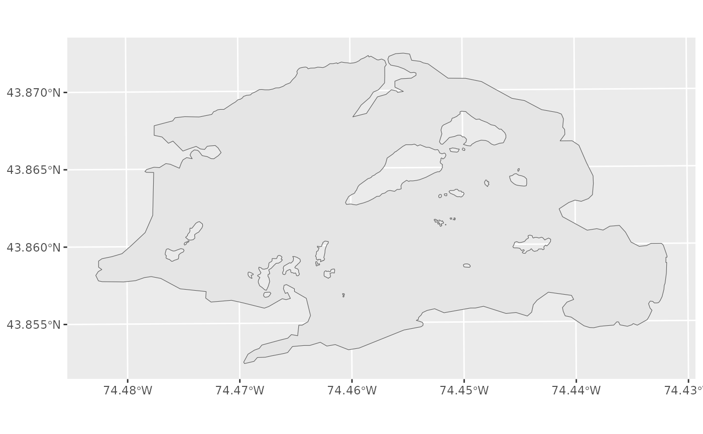

The OpenStreetMap boundary polygon for Blue Mountain Lake in Hamilton
County, New York. Bundled with the package so that fetch examples can
run offline (no internet or Overpass API call required) and pkgdown
pages can render plot output. The coordinates match the sites in
system.file("extdata", "sample_sites.csv", package = "lakefetch"),
so the two datasets can be used together end-to-end.
Format
An sf object with 1 row and 3 fields plus geometry:
- osm_id
OSM relation identifier
- name
Lake name ("Blue Mountain Lake")
- area_km2
Surface area in square kilometers
- geometry
MULTIPOLYGON geometry in UTM Zone 18N (EPSG:32618)
Source
Downloaded from OpenStreetMap
https://www.openstreetmap.org/. See
data-raw/create_example_data.R for the exact query.
Examples
data(example_lake)
print(example_lake)
#> Simple feature collection with 1 feature and 3 fields
#> Geometry type: POLYGON
#> Dimension: XY
#> Bounding box: xmin: 541565.8 ymin: 4855616 xmax: 545660 ymax: 4857845
#> Projected CRS: WGS 84 / UTM zone 18N
#> osm_id name area_km2 geometry
#> 1 2202972 Blue Mountain Lake 5.055174 POLYGON ((543523.8 4857818,...
# Plot the lake
library(ggplot2)
ggplot(example_lake) + geom_sf()

# Load matching sample sites (they lie inside this polygon) and
# compute fetch end-to-end without touching OSM. First convert
# example_lake into the multi-lake list format that fetch_calculate()
# expects:
sites <- load_sites(system.file("extdata", "sample_sites.csv",
package = "lakefetch"))
#> Loading data from: /home/runner/work/_temp/Library/lakefetch/extdata/sample_sites.csv
#> Loaded 2 rows with columns: Site, latitude, longitude, lake.name
#> Using columns: Latitude = latitude, Longitude = longitude
#> Preserved lake name column: lake.name
#> Final valid samples: 2
#> Detected location from column 'lake.name': Blue Mountain Lake